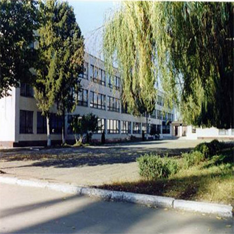
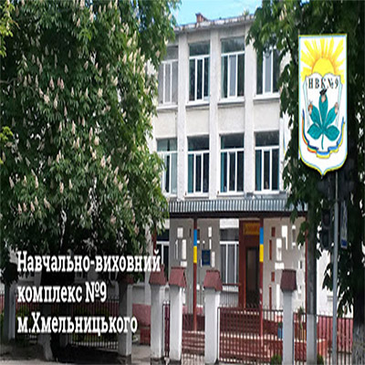
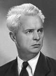
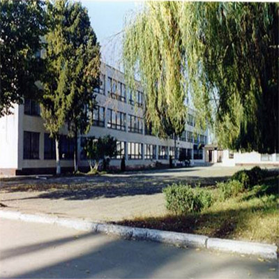
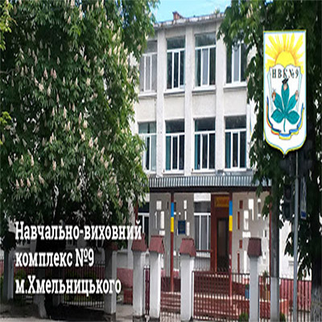

 

 Народився 10 вересня 1894р. в с. В’юнище на Чернігівщині у родині неписьменних селян. Навчався у місцевій початковій та вищій школах. У 1911р. вступив до Глухівського вчительського інституту. Після закінчення інституту у 1914р. учителював у Житомирі, Києві. У 1917р. вступив до Київського комерційного інституту на економічний факультет. Захопившись революцією, служить у петлюрівській армії. За цу у 1919р. засудили його до ув’язнення в концтаборах. Однак його врятували. У 1920р. приєднався до КП(б)У, з якої згодо виключений. У 1921р. направили за кордон на дипломатичну службу(Варшава, Париж, Лондон). У 1922-1923рр. живе у Берліні, обіймає посаду секретаря генконсульства УСРР у Німеччині. По поверненні в Україну, влітку 1923 року, оселяється у Харкові. Відвідує засідання «Гарту», невдовзі стає співзасновником ВАПЛІТЕ. Згодом через ВАПЛІТЕ зближується з ВУФКУ, але у Харкові у той час єдиним драматичним мистецтвом був театр, а Довженка театр не цікавив. З 1925 року р. стажист по агітфільму «Червона Армія». Від’їжджає до Одеси закінчувати фільм, де влаштовується режисером на кінофабриці. У 1926р. створив за своїми сценаріями перші фільми «Вася-реформатор» і «Ягідка кохання». Перший серйозний успіх прийшов у 1929 році після виходу на екрани фільму «Звенигора». «Звенигора» була сенсацією 1928 року, але водночас це був початок особистої трагедії Довженка — за цю стрічку, та згодом за фільм «Земля» його будуть постійно звинувачувати у буржуазному націоналізмі. У 1930р. одружується з акторкою Юлією Солнцевою. У 1933р. переїздить до Москви, а потім на Далекий Схід. У 1935р. нагороджують орденом Леніна. На початку війни потрапляє в Уфу та до Ашхабаду. Іде добровольцем на війну, як кореспондент газети «Красная армия». У 1943р. завершує кіноповість «Україна в огні», яку Сталін заборонив. До останніх днів живе в Москві, працює на «Мосфільмі». 25 листопада 1956р. помер у Москві.

Вулицю Довженко назвали на честь одного з військових. Коли російські війська наступали на Україну, а в тому числі і на Ракове, то один з солдатів захтів протистояти їм і не пошкодував. Він убив більше сотні солдатів, після цього на Ракове ніколи не приходили російські війська, а вулицю на якій він жив прозвали по його прізвищу
 
@Copyright Pavlo Stetsuk 2020. IT homework, NVO №23